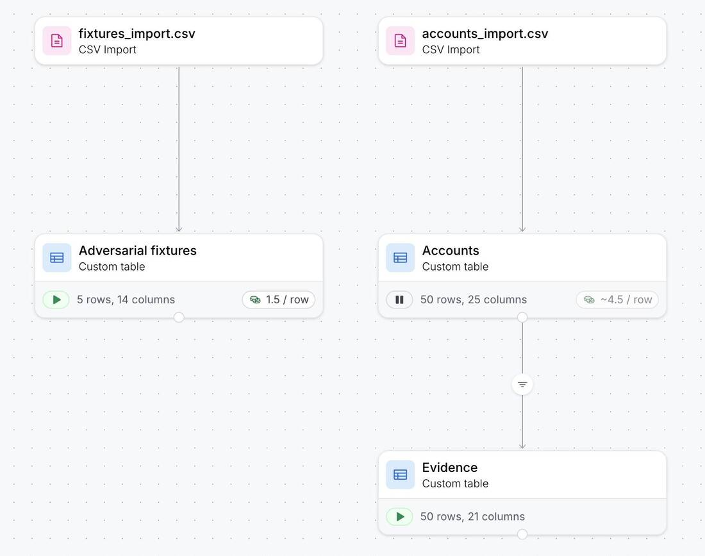
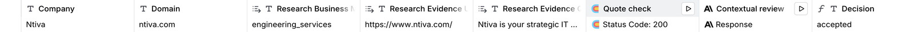
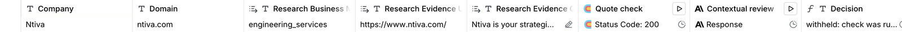
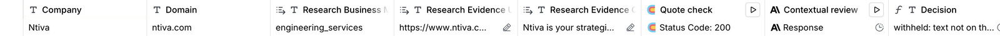
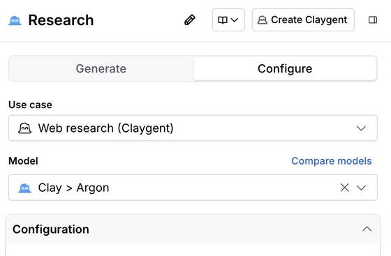
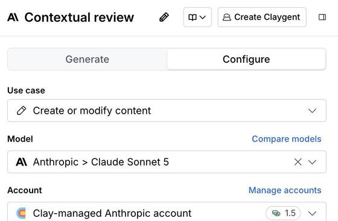

One account: the decision and the passage behind it
Loading the accounts.
How it runs in Clay
One workbook. Accounts does the work and writes each account's latest decision to Evidence, where a lookup reads it back. Adversarial fixtures runs the same checks on five made-up cases.

One row, three states
The Ntiva row in the Accounts table, edited by hand in Clay to show what the Decision formula does. The review is not rerun in any of them.





Five adversarial cases
Made-up companies on test pages, labelled as fixtures, never mixed into the 50.
The quote-check column (HTTP API)
The key lives in a saved Clay header account, never in the column or a template. The endpoint only fetches domains on its list, re-checks every redirect, caps time and size, and calls no model. Its rate limits are Cloudflare's per-location limiters (30 a minute per IP, 60 a minute per location), not a hard global cap. The Decision and Binding formulas are in the repository and tested against the same policy in code.
The 50
Each company was also labelled by a reference review: two agents that had not seen the classifier's output read each company's own pages. Here is how many labels each step keeps, and how many of those disagree with the reference.
The decision policy (v3)
A label is kept only if, for the same input (company, domain, label, URL and quote), the quote was found in the text of the cited page, that page is on the company's own domain after redirects, and the review agrees that the passage, read in context, shows the label. Anything missing or run on another input keeps the company unresolved, never an end customer by default. A page that cannot be read is unverifiable, not an invention.
The target is the company at the sample's domain, not its parent group. Engineering services means software and IT work sold to other organizations. Mixed means the evidence shows both selling that work and something else; too little evidence is withheld, not mixed.
Where the numbers come from
What this does not prove
The checker matches text extracted from the fetched HTML: scripts, styles and elements hidden in the HTML are removed, but CSS or script-driven visibility is not evaluated. A quote on a page proves the words are there, not that they are true. The review is another model. The reference is agent-generated, not ground truth. Evidence stores each account's latest decision; it is not a version history. It ran on a Clay trial workspace, on 50 companies I picked, not on your list.